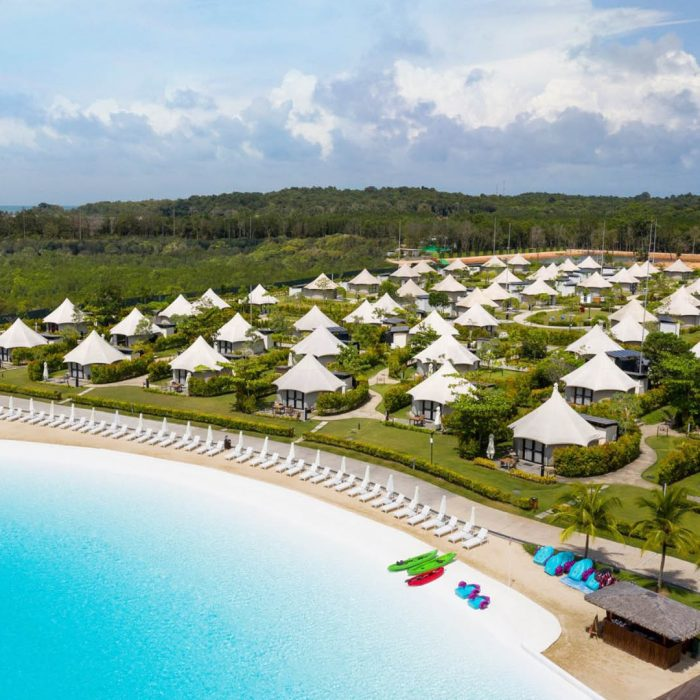
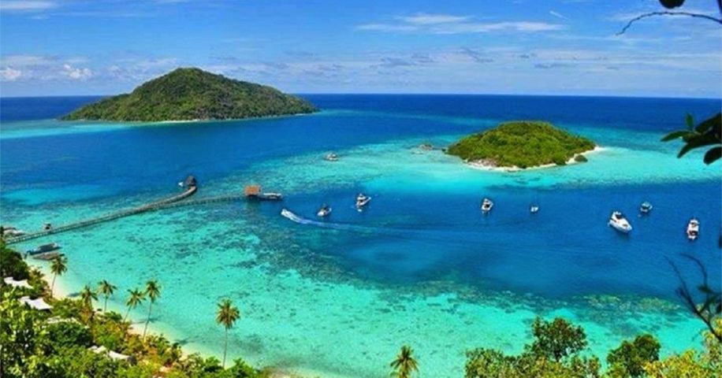
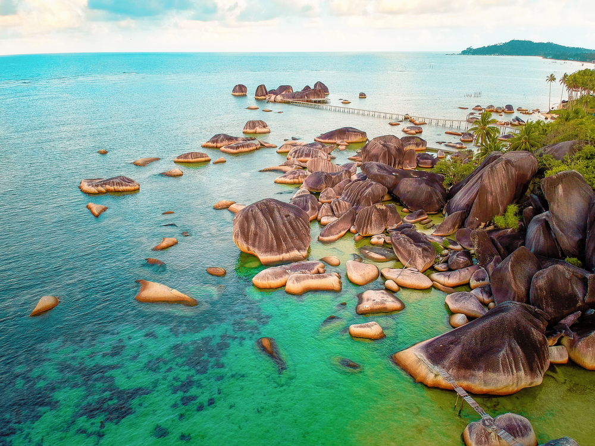
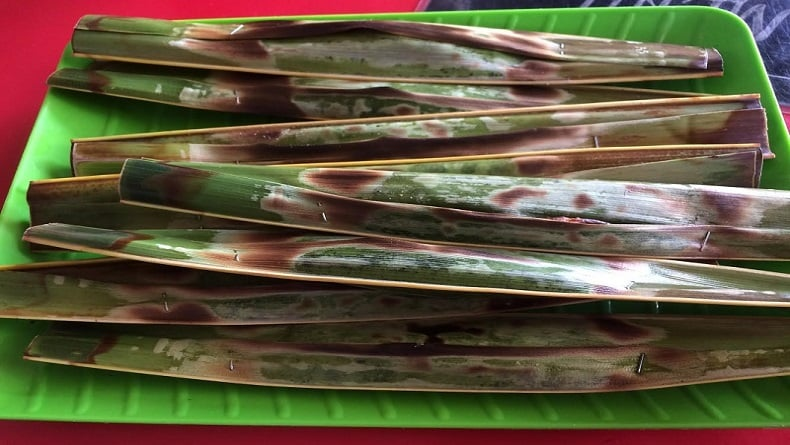
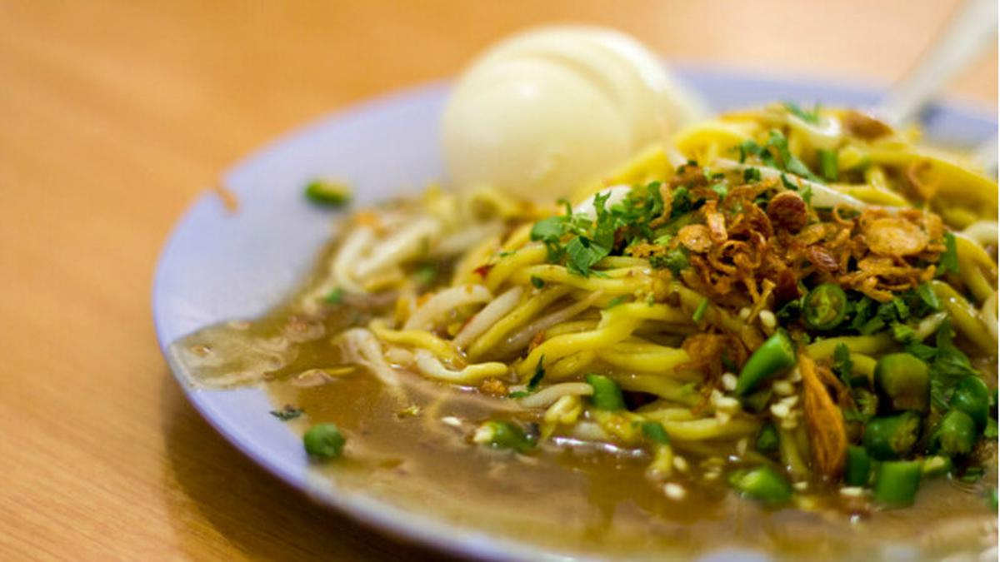

Tentang Kepulauan Riau (Kepri)
Kepulauan Riau (Kepri) adalah provinsi kepulauan yang terdiri dari ribuan pulau besar dan kecil, menjadikannya salah satu jalur maritim terpenting di Indonesia. Terletak strategis berdekatan dengan Singapura dan Malaysia, Kepri dikenal sebagai pintu gerbang pariwisata internasional. Pulau-pulau utamanya seperti **Bintan**, **Batam**, dan **Karimun** menawarkan fasilitas wisata modern, sedangkan pulau-pulau terluar seperti **Natuna** dan **Anambas** menyimpan keindahan alam bawah laut yang masih perawan.
✨ Mengapa Memilih Kepulauan Riau?
Kepri menawarkan kombinasi sempurna antara liburan mewah dan eksplorasi alam. **Pulau Bintan** adalah rumah bagi resor-resor kelas dunia, lapangan golf internasional, dan wisata pantai yang tenang. **Batam** adalah pusat perbelanjaan dan kuliner yang ramai. Di sisi lain, **Kepulauan Anambas** dan **Natuna** telah diakui sebagai destinasi *diving* dan *snorkeling* terbaik karena airnya yang jernih dan terumbu karang yang sehat. Provinsi ini sangat ideal bagi wisatawan yang mencari liburan yang mudah diakses dari luar negeri, tetapi tetap mendambakan ketenangan dan keindahan alam maritim Indonesia.
🗺️ Destinasi Unggulan
Bintan Resorts, Pulau Bintan
Kawasan resor terpadu dengan pantai berpasir putih, fasilitas mewah, dan aktivitas air. Populer di kalangan turis internasional karena kedekatannya dengan Singapura.
Kepulauan Anambas
Gugusan pulau yang dinobatkan sebagai salah satu pulau tropis terindah di Asia. Terkenal dengan Danau Bawah Laut **Dua Warna** dan perairan yang sangat jernih.
Pulau Penyengat, Tanjungpinang

Pulau bersejarah yang dulunya merupakan pusat Kerajaan Riau-Lingga. Terdapat Masjid Sultan Riau yang unik karena konon dibangun dengan campuran putih telur.
Jembatan Barelang, Batam

Enam jembatan megah yang menghubungkan Pulau Batam, Rempang, dan Galang. Jembatan utama (Tengku Fisabilillah) menjadi ikon dan spot foto populer di Batam.
Natuna (Pulau Senua dan Batu Kasah)
Pulau terluar Indonesia yang menawarkan keindahan alam yang dramatis, terutama batuan granit besar dan pantai-pantai yang masih alami seperti Pantai Batu Kasah.
Gurun Pasir Busung, Bintan

Situs unik bekas penambangan bauksit yang kini menyerupai padang pasir mini. Menjadi daya tarik fotografi dengan bukit-bukit pasir putih dan danau biru.
Makanan Khas Kepulauan Riau
-
1. Gonggong

Sejenis siput laut yang menjadi ikon kuliner Kepri, terutama di Batam dan Bintan. Biasanya direbus dan dinikmati dengan cocolan sambal pedas.
-
2. Otak-Otak
Adonan ikan tenggiri yang dibumbui, dibungkus dengan daun kelapa atau daun pisang, dan dipanggang di atas bara api hingga matang. Aroma asapnya sangat khas.
-
3. Lendir (Mie Sagu)
Mie kuning yang disajikan dengan kuah kental berwarna cokelat tua yang terbuat dari kacang dan ubi. Sangat populer di Batam dan Tanjungpinang.
-
4. Nasi Dagang

Hidangan sarapan khas Melayu (dipengaruhi Malaysia) yang terdiri dari nasi yang dimasak dengan santan dan kunyit, disajikan dengan ikan tuna kuah kari dan acar sayuran.